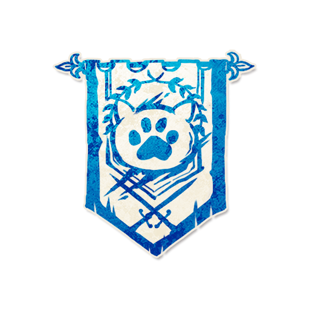

猫猫军团

角色配置
- 角色类型：镇民
你顺时针上最近的猫猫军团是你的同伴。 每个夜晚，你会得知同伴邻近的两名存活的玩家中是否有邪恶玩家。[+0~2猫猫军团]
以上配置来自最终 JSON 合集；以下保留原文档说明（如有）。
背景故事
“我们人多势众，连影子都结伴而行。”
角色能力
你顺时针上最近的猫猫军团是你的同伴。
每个夜晚，你会得知同伴邻近的两名存活的玩家中是否有邪恶玩家。[+0~2猫猫军团]
角色介绍
猫猫军团的“同伴”是顺时针方向最近的猫猫军团；每晚得知同伴两侧邻座是否有邪恶玩家。
范例
两名猫猫军团小甲、小乙，顺时针方向小甲→小乙。小甲的同伴是小乙。小乙的左右邻座是小丙（爪牙）和小丁（镇民），小甲得知“是”。
只有一名猫猫军团小甲，同伴是小甲自己。小甲左右邻座都是镇民，得知“否”。
猫猫军团小甲中毒，得知了与正确结果相反的信息。
运作方式
设置游戏时，除猫猫军团外，再放置0到2名猫猫军团（[+0~2猫猫军团]）。
每个夜晚（包括首个夜晚），确定每名猫猫军团的“同伴”：顺时针方向最近的猫猫军团（不要求存活）；如果场上没有其他猫猫军团，同伴就是自己。
检查同伴顺时针与逆时针方向各最近的一名存活玩家。
如果其中任何一名是邪恶玩家，告知该猫猫军团“是”；否则告知“否”。
提示标记
同伴
放置时机：游戏开始时。
放置条件：放置在同伴角色标记旁。
移除时机：游戏结束时（同伴死亡不改变同伴关系）。
规则细节
同伴不要求存活：即使同伴死亡，同伴关系也不会改变，检查仍以死亡同伴的座位两侧为准。
只有一名猫猫军团在场时，同伴就是自己。
检查对象是同伴左右两侧各最近的一名存活玩家（跳过已死亡的玩家）。
多名猫猫军团各自独立获取信息。
信息格式：“是”或“否”。
错误信息格式：与正确结果相反的结果。
猫猫军团中毒或醉酒时，说书人给出错误信息。
游玩与对抗技巧
你的同伴是顺时针最近的猫猫军团（不要求存活）：多人时信息更密集。
每晚得知同伴两侧存活玩家是否有邪恶：结合同伴位置锁定邪恶范围。
同伴死亡不影响关系：信息依然有效。
伪装成该角色
你没有猫猫军团的能力：你没有“同伴”信息，只能声称“我得知同伴旁有邪恶/没有邪恶”。
伪装成猫猫军团需要“同伴”概念：报“我得知同伴旁有邪恶”，别人难以验证。
多人猫猫军团时，报信息要结合其他“猫猫军团”，否则穿帮。
角色信息
英文名：Cat Legion
角色类型：镇民
角色能力类型：设置调整、获取信息、持续检测型能力
能力设计：卷饼